De Pátria para Pátria
Uma jornada épica de Kentucky para Burundi passando por Gales e
Ucrânia
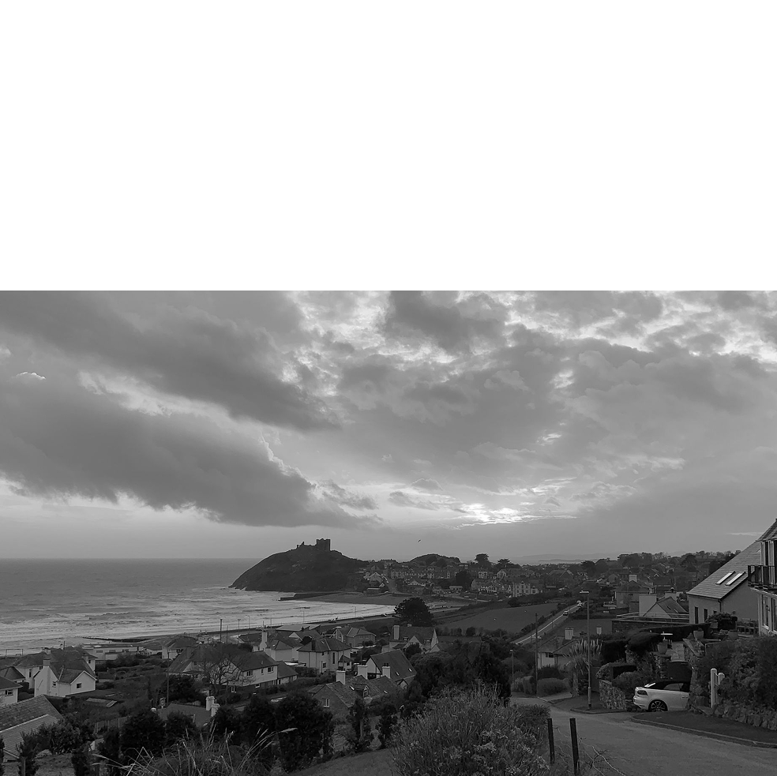
Conheça um pouco mais sobre a localização dos seus amigos
Cada pessoa é um artista livre para criar o próprio destino. Essa
frase pertence a Joseph Beuys.
— Joseph Beuys
A cidade de TripleTen reuniu profissionais de diversas partes do
mundo. Hoje, a Galeria de Arte Burguesa tem o orgulho de apresentar
histórias e fotografias de algumas das pessoas que dedicam seu tempo e
energia para fazer com que os futuros profissionais de tecnologia
desta cidade se sintam em casa. Cada um de nós tem uma história única
sobre o lugar de onde viemos. Sinta-se à vontade para adicionar sua
própria história e uma obra de arte visual dedicada à sua cidade natal
à nossa coleção crescente. Não importa de onde você é, estamos felizes
em ter você como nossa vizinha ou vizinho.
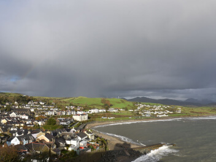
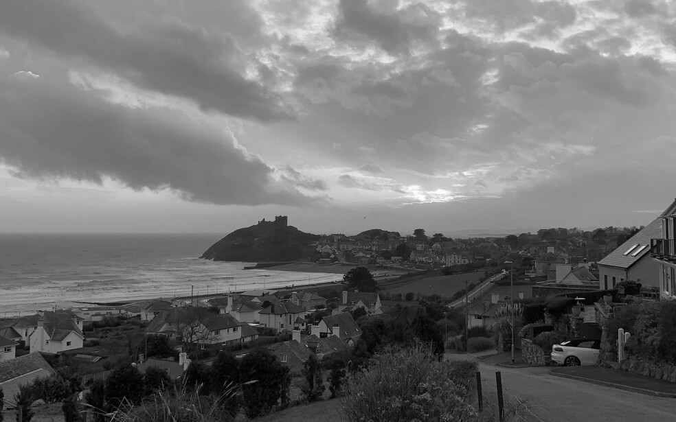
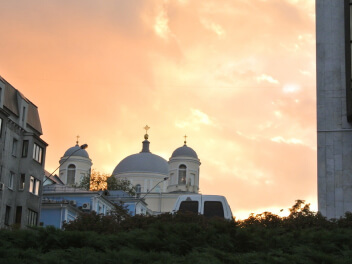
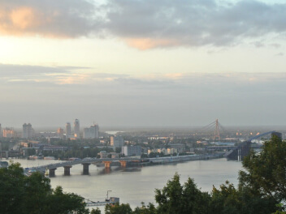
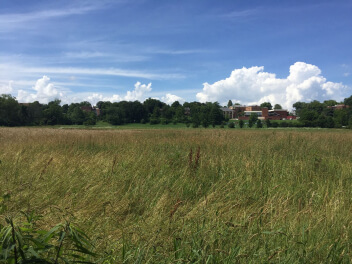
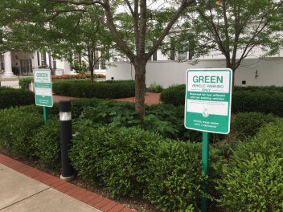
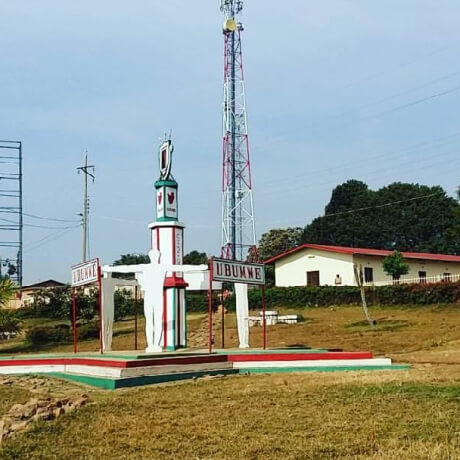
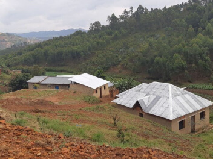
Kyiv, Ucrânia

Kyiv (ou Kiev), capital da Ucrânia, é uma cidade grande com mais
de 2,8 milhões de habitantes. A cidade foi fundada em algum
momento do século VII e agora é uma metrópole cosmopolita com
mais de mil anos de história atrás de si. Olhando para as suas
origens, a cidade é muito mais velha do que nenhuma outra na
Europa Central e Oriental.
A cidade é lar de uma grande variedade de atrações, incluindo
monumentos históricos, museus, igrejas, parques e muito mais.
Kyiv também é um grande centro cultural, financeiro e econômico,
atraindo turistas de todo o mundo.
Compre esta obra de arte como NFT
Criccieth, País de Gales
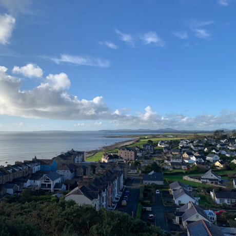
A ruína medieval do Castelo de Criccieth tem vista para a cidade
de uma rocha que se projeta sobre o mar. Acredita-se que tenha
sido construída por Llewelyn, o Grande, no século XIII. Cerca de
900 anos depois, a auto-intitulada Pérola de Gales nas margens de
Snowdonia ainda está lá para visitantes contemplar a paisagem
deslumbrante dos arredores.
Além do castelo, outros pontos de destaque são subir à colina
para apreciar a vista panorâmica da baía de Criccieth e a orla do
mar, ou simplesmente desfrutar de um sorvete Cadbury's famoso
enquanto caminha pela praia.
Compre esta obra de arte como NFT
Berea, EUA
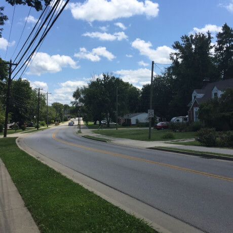
Berea é uma pequena cidade localizada na parte central do
Kentucky. A cidade é cercada por belas florestas e campos. É
conhecida como a capital artesanal do estado, e os visitantes
encontrarão muitas oportunidades de compras: lojas com bijuterias
artesanais, velas, artigos de madeira, galerias, ateliês de vidro
e muito mais.
Mas provavelmente é a faculdade local que atrai mais atenção para
Berea. O Berea College foi fundado em 1855 e foi o primeiro do
sul a ser racialmente integrado, bem como o primeiro a ser
co-educacional.
Compre esta obra de arte como NFT
Muramvya, Burundi
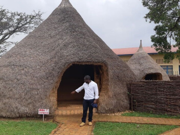
Muramvya é uma das 18 províncias de Burundi. Na era do reino,
Muramvya era a capital real e em 2007, por causa de sua paisagem
cultural e natural, foi adicionada à Lista Provisória do
Patrimônio Mundial da UNESCO.
A montanha é alta e o clima é relativamente frio durante todo o
ano. Entre as noites frias e as manhãs nubladas, a neblina dá à
paisagem um ar de mistério. Mas quando o sol sai, você pode ver
até o Lago Tanganyika de Muramvya.
A história de Muramvya é uma história que fala de coisas simples
da vida cotidiana: o tambor Karyenda, a árvore sagrada do
Umurinzi, a música que faz as pessoas dançarem e a harmonia da
vida comunitária.
Compre esta obra de arte como NFT
Braga, Portugal
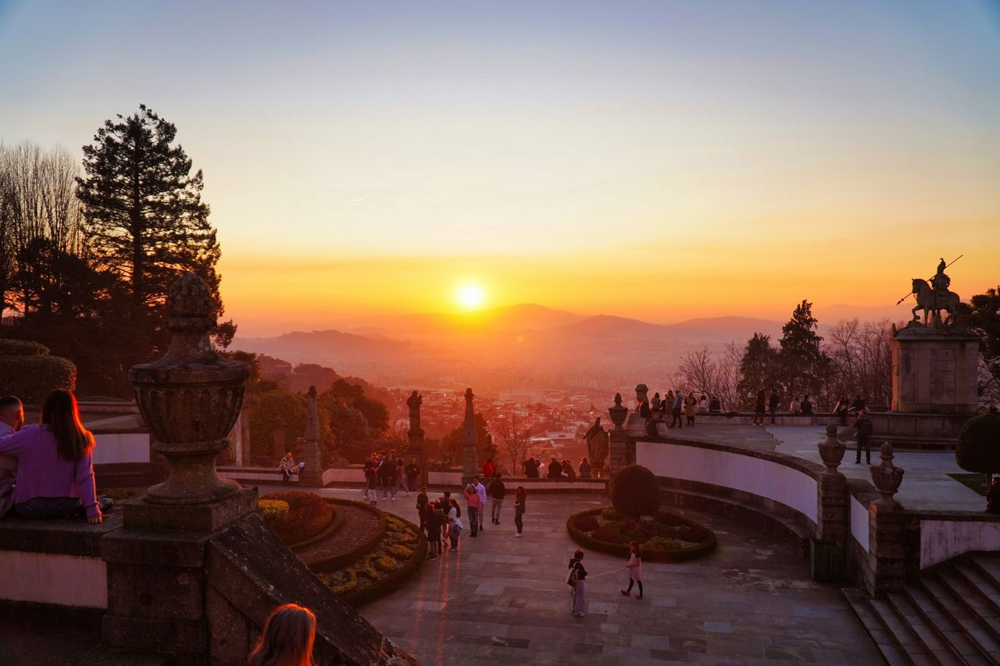
Braga é uma das cidades mais antigas de Portugal, fundada pelos
romanos com o nome de Bracara Augusta. Conhecida como a Roma
Portuguesa, Braga possui uma impressionante herança arquitetónica
e religiosa, sendo famosa pelo grandioso Bom Jesus do Monte.
Nos últimos anos, Braga tornou-se também um centro tecnológico
vibrante, atraindo startups e profissionais de toda a Europa. Com
uma universidade dinâmica e uma cena cultural rica, Braga combina
o legado histórico com a modernidade.
Compre esta obra de arte como NFT